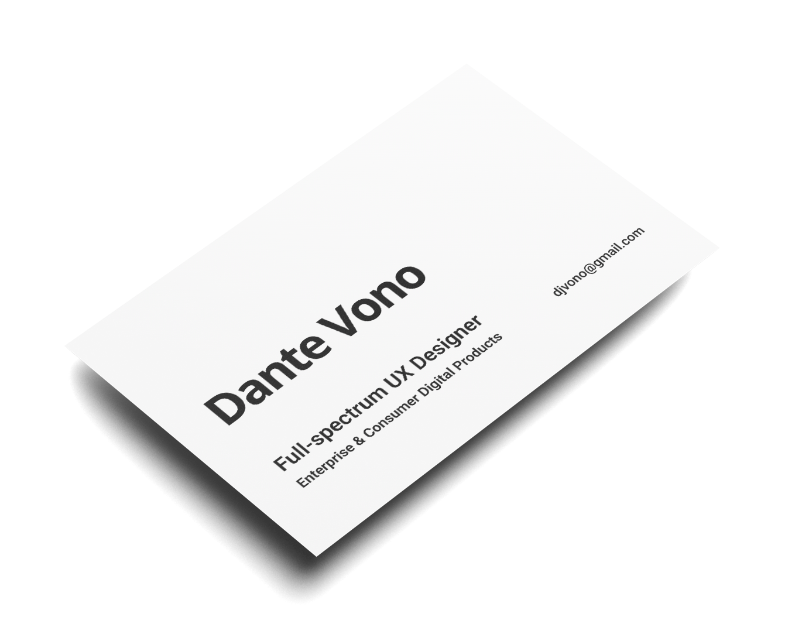

Skills
Process
Outcomes

I’m a
full-spectrum
UX Designer of Enterprise & Consumer Digital Products
I use my
UX skills
and
design process
to deliver
successful outcomes
for customers and your business.
Check out how I do it